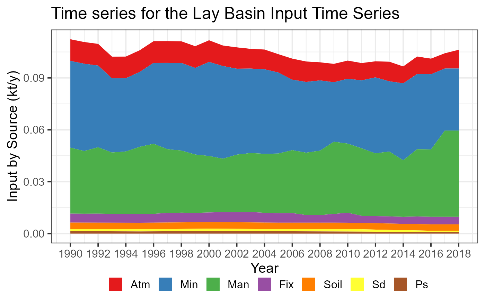
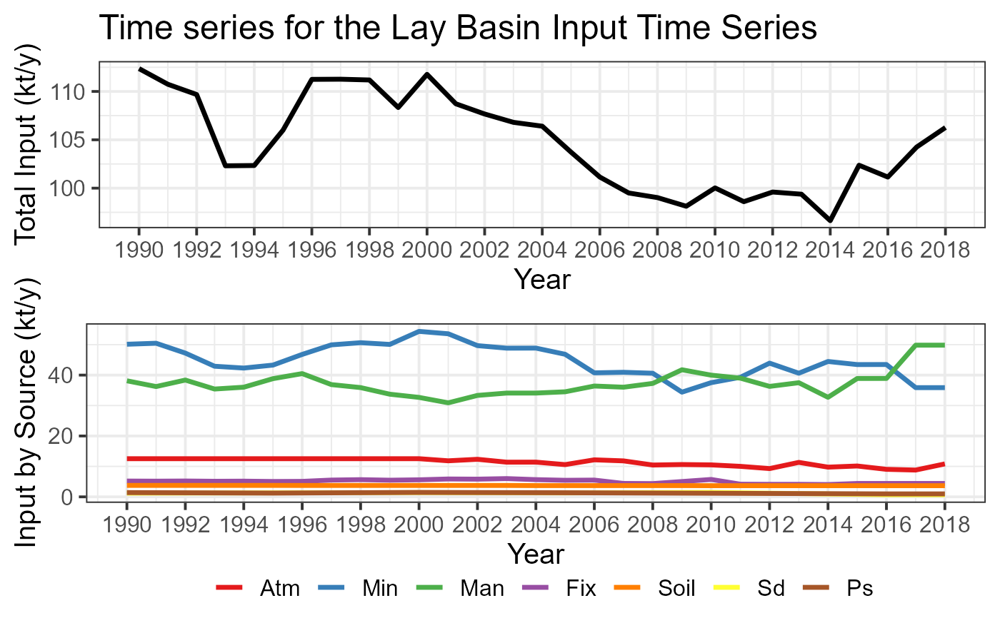
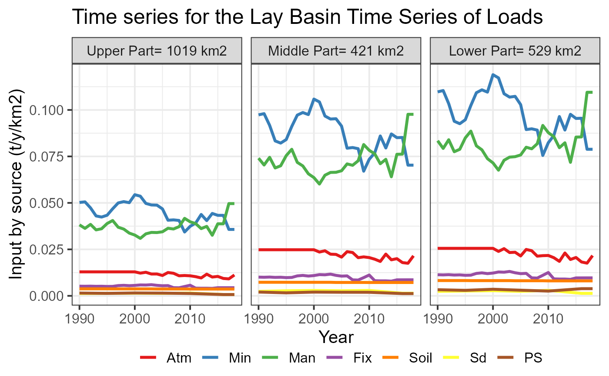

Creates a time series plot showing basin inputs by source
input_Tserie(catch_data, annual_data, sh_file, basin_name, plot.type)data frame. Definition of the topological sequence of catchments.
data frame. Sources of nutrient for each year and catchments.
sf object. The spatial information.
character. The title of the plot
character. Alternative of the plot: “gr1”: stacked area; “gr2”: lines & area; “gr3”: by km2; “gr4” by km2 and Shreve.
A time-series plot
# the data of the TN scenario
data(catch_data_TN)
data(annual_data_TN)
data(sh_file)
# The title of the plot
plotTitle <- "Time series for the Lay Basin"
# the time serie plot 1 (lines)
input_Tserie(catch_data_TN, annual_data_TN, sh_file, plotTitle, "gr1")

# the time serie plot 2 (lines & area)
input_Tserie(catch_data_TN, annual_data_TN, sh_file, plotTitle, "gr2")

#> TableGrob (2 x 1) "arrange": 2 grobs
#> z cells name grob
#> 1 1 (1-1,1-1) arrange gtable[layout]
#> 2 2 (2-2,1-1) arrange gtable[layout]
# the time serie plot 3 (by km2)
input_Tserie(catch_data_TN, annual_data_TN, sh_file, plotTitle, "gr3")
#> Scale for 'x' is already present. Adding another scale for 'x', which will
#> replace the existing scale.
# the time serie plot 4 (by km2 and Shreve)
input_Tserie(catch_data_TN, annual_data_TN, sh_file, plotTitle, "gr4")
